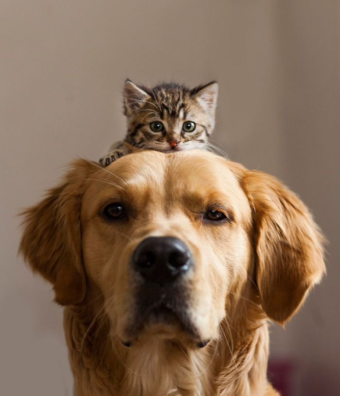
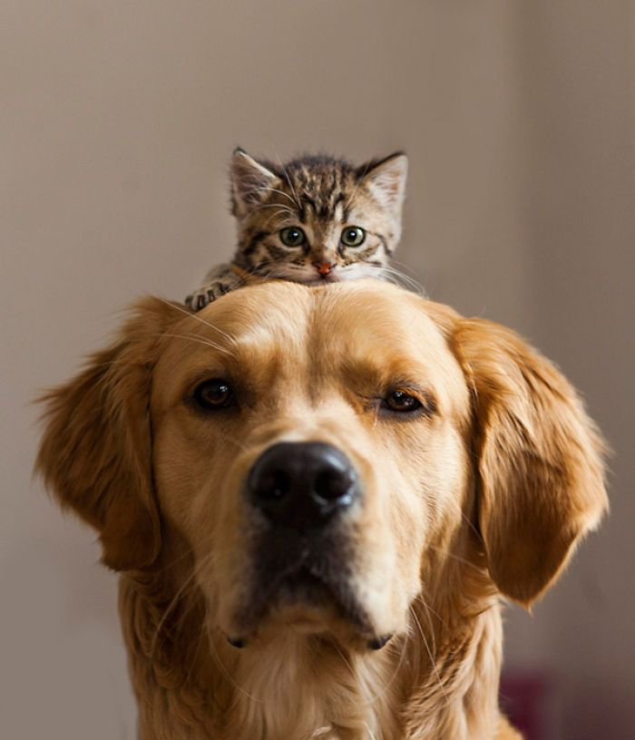
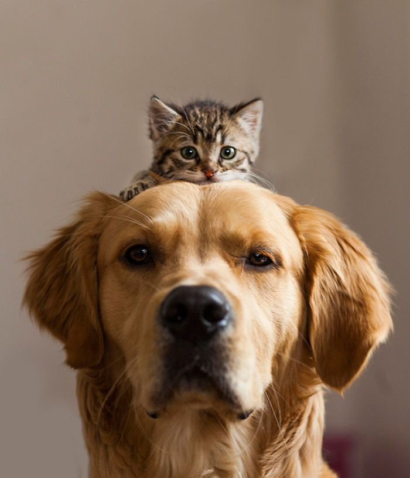

¡Bienvenido a nuestro refugio de mascotas! Encontrar tu compañero peludo perfecto es más que una adopción: es el comienzo de una historia de amor incondicional. Explora nuestras adorables mascotas en busca de un hogar y descubre cómo puedes cambiar una vida adoptando.

Sobre Nosotros: En nuestro refugio, creemos en dar segundas oportunidades. Desde perros juguetones hasta gatos cariñosos, cada mascota tiene una historia única. Estamos dedicados a encontrarles hogares amorosos donde puedan prosperar y ser parte de una familia. Conoce nuestro equipo comprometido y nuestra misión de hacer que cada mascota encuentre su lugar en el mundo.
{% endblock %}